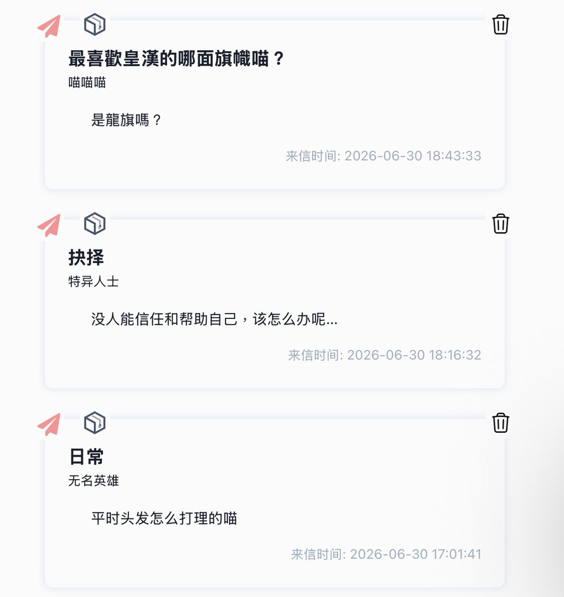

Wesley
@Wesley10032
@Mark67358226 皇汉跨旗……依旧成分复杂😨

Lhn002
@Mark67358226
嗚嗚對不起這個匿名提問我沒玩明白，才看見收件箱😭😭，對不起喵……開始回答吧
平時頭髮咱幾乎不打理呢，就放任生長，就洗澡時候洗一次，咱算不愛乾淨的w
唉現實中我也有這個問題呢……我唯一能做的也只有網絡上交一些好朋友吧，但效率也很低，是個不好解決的問題，還是外等待等待吧 https://t.co/KCw1mcVV9h